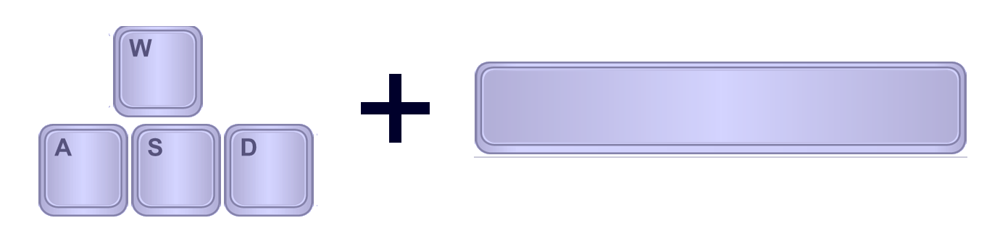
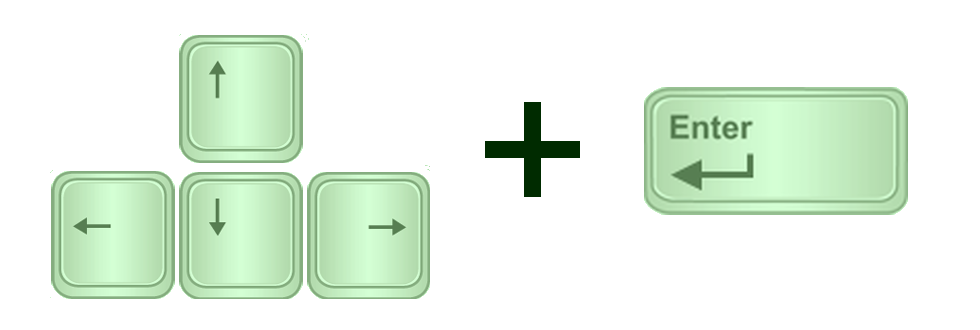
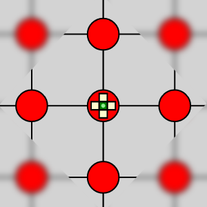
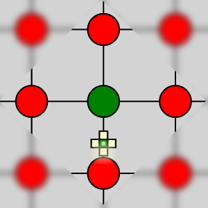

Instructions
Objective
Try to "munch" as many of the toxic nodes as possible. As you maneuver your ship, the closest toxic node will become highlighted either in blue or green depending upon your player color. Fire a nanomuncher to begin munching the graph!
The game ends either when the entire graph is munched or when both players have run out of nanomunchers and there are no longer any nanomunchers active on the board. The winner is the player that munched the most nodes.
Gameplay
Watch your nanomuncher clip underneath your player name to see how many nanomunchers remain. The nanomuncher at the bottom of the clip is the next to be deployed. Its program instructions are shown as the numbers 1, 2, 3, and 4 indicating the order by which the nanomuncher will move once deployed on the graph.
Blue Player
Control the blue player using the keyboard.
Maneuver the blue ship using the keys W, A, S, and D and fire a nanomuncher using SPACEBAR.
Green Player
Control the green player using the keyboard.
Maneuver the green ship using the keys UP, LEFT, DOWN, and RIGHT and fire a nanomuncher using ENTER.
Nanomunchers
Nanomunchers obey a simple program that gives priority to each of the directions up, down, left, and right. Imagine that you are standing in the middle of the intersection of two roads holding a paper with the text "D U L R". This set of instructions is guiding you to move to the next intersection by checking in the order of down, then up, then left, then right.
 The first direction that you find that is clear, you move to it and remember where you left off. At the next intersection, you begin searching for a move by starting from the next instruction in the list so that if you moved down at the last node, you will check up, then left, then right, then down to make the next move.
When there are no clear moves in all four directions, the nanomuncher is deactivated as its work is complete.